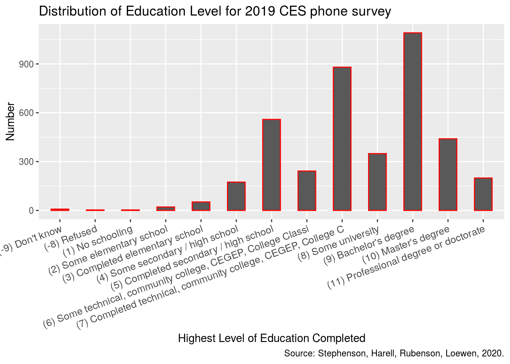
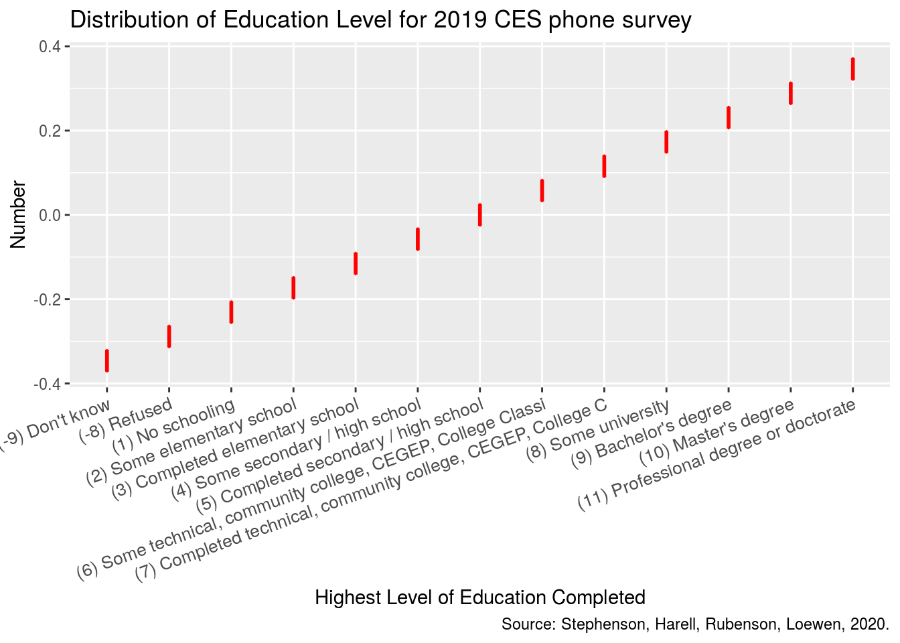

Abstract
The Canadian Election Studies is an impressive body of survey data and it is of great importance for us to investigate why Canadians vote the way they do. In this paper we explore the 2019 CES phone survey data set. We find that the population of voted Canadians tend to have completed secondary or higher levels of education. Our findings have implication that it is important to promote voting among all Canadians to eliminate discrimination and thus providing a better representation of peoples’ choices.
Introduction
It is of great importance for us to investigate why our fellow Canadians vote the way they do. In this study, we aimed to look into the Canadian Election Studies phone survey conducted in 2019 and further investigate the education level as a factor influencing the voting.
A bar chart is used to illustrate the overall distribution of the highest level of education that the voters’ have completed. It is shown that the highest amount of voters are among the ones that have completed a secondary education or have obtained a bachelors’ degree.
The first part of the paper provides a brief description of the data set CES2019_phone. The second part of the paper further investigates voters’ education level and a bar graph showing the overall distribution and comparisons between different education groups. The final part of the paper discusses main finding of the graph and weaknesses regarding the study. References are listed subsequently.
Data
The CES2019_phone data set includes a 2019 post-election followup survey containing 4021 observations. The data set is too big to be visualized. The data set also contains various observation types such as character, numeric and factor. Highest level of education completed is the variable we are interested in investigating and it is a discrete variable. The level of education is divided into 13 different categories ranging from “No Schooling” to “Professional Degree or Doctorate” with two categories being “Refused” and “Don’t know”.
Bar graph & Box plot

The bar graph illustrates the number of voters in highest levels of education that they have completed. The highest number of survey participants are the ones who have obtained a bachelor’s degree. Voters who have completed secondary education or community college also constitutes a majority of the whole survey participants population. We can observe a close to 500 difference in number of voters between those who have completed lower levels of education and higher levels of education.
The box plot shows
Discussion
Survey Features: An important feature of this survey is that it contains two levels of education namely “Refused” and “Don’t know”. We know that in the survey there usually exists a kind of “non-response” bias when the survey taker decides not to choose a specific category which leads to the survey not able to accurately reflect the targeted group. However, for a well-designed and highly responded like CES2019_phone, this is more of an opportunity than an issue. It helps us to better understand the survey taker groups.
reference
Wickham et al. (2019) (???) R Core Team (2020)
R Core Team. 2020. R: A Language and Environment for Statistical Computing. Vienna, Austria: R Foundation for Statistical Computing. https://www.R-project.org/.
Wickham, Hadley, Mara Averick, Jennifer Bryan, Winston Chang, Lucy D’Agostino McGowan, Romain François, Garrett Grolemund, et al. 2019. “Welcome to the tidyverse.” Journal of Open Source Software 4 (43): 1686. https://doi.org/10.21105/joss.01686.